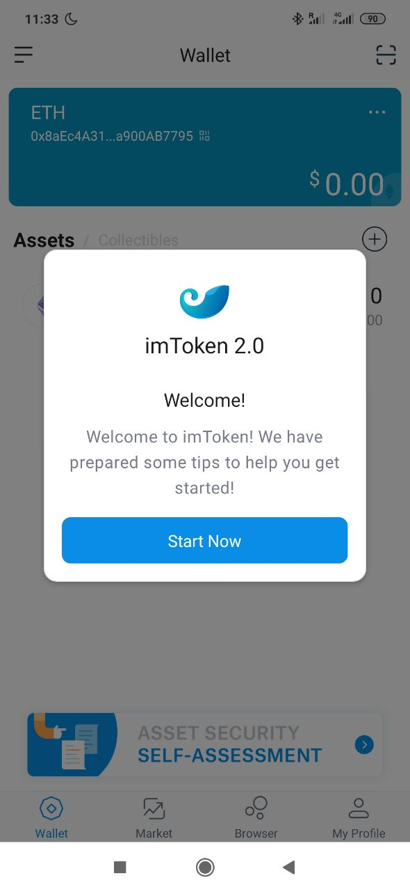

¿Cómo crear una cartera de cryptomonedas?
Las carteras de cryptomonedas son el elemento básico para recibir, enviar e interactuar con activos digitales como cryptomonedas.
Para una descripción detallada de conceptos como carteras, direcciones y sus diferentes tipos, ver el artículo Cryptocarteras, direcciones y llaves Privadas (Próximamente)
Eligiendo nuestra primera cartera
Para este primer tutorial vamos a empezar con una cartera multichain, que sirve tanto para Ethereum como Bitcoin y otras cryptomonedas. También va a ser una cartera "no custodia" - lo que significa que seremos los responsables de mantener la llave privada en un lugar seguro. ¡Si la perdemos no hay ningún botón de "recuperar contraseña"!
Para más información sobre qúe es la custodia y las llaves privadas, escuchad el Podcast #2: ¿Quiero ser responsable de mis activos digitales? con Angel Luís Quesada Nieto, CEO de Onyze
1. Descargando la cartera
Para este paso-a-paso vamos a utilizar la manera más sencilla de hacerlo: a través de una App móvil, en este caso, imToken
Buscaremos y descargaremos imToken de la App Store / Play Store, o podemos conseguir el link desde su página web: token.im
2. Configuración
Una vez instalada la aplicación, quizás os encontráis con que está en inglés. Esto se puede cambiar más tarde en el menú de opciones, pero tendremos que hacer los primeros pasos en inglés.
a. 
Le daremos a la opción "Create Identity" para crear una nueva identidad (si por cualquier razón luego quisieramos acceder la misma cartera desde otro móvil utilizaríamos la opción "Recover Identity")
b. 
Aceptamos los Términos de Uso
c. 
Y elegimos las criptomonedas que queremos mostrar.
Mi recomendación es pulsar "Confirm" directamente, así nos elegirá Ethereum, Bitcoin y Atom. Para empezar no necesitamos más, a no ser que sepáis que quereis un tipo concreto de cryptomoneda minoritaria.
3. Salvaguardando la llave privada
Ahora nos va a pedir que hagamos un backup de la frase mnemónica.
Importante
Si no queremos perder el acceso a nuestra cartera y todos los activos digitales que hay dentro, recordad que hay que guardar la frase mnemónica en un lugar seguro. ¡NO: una captura de pantalla NO es un lugar seguro! Más info en "Cryptocarteras, direcciones y llaves privadas" (Próximamente)
La frase mnemonica es una serie de 12 palabras de las cuales se deriva la llave privada de nuestras criptomonedas. Debemos apuntarlo a papel y boli y ponerlo en un lugar seguro en casa.
Si no estáis en casa ahora mismo, o no tenemos papel, podemos saltarnos este paso y completarlo luego, aunque ¡hay que hacerlo, por favor! No seríamos los primeros en perder nuestras criptomonedas a causa de haber perdido la llave privada (o la frase mnemonica, son equivalentes).
Una vez tengamos boli y papel le daremos a "Backup Now".
Y seguidamente apuntaremos las palabras por orden tal y como las muestran.

Luego nos pedirá que volvamos a apuntarlas en el orden correcto, para asegurarse de que las hemos guardado bien:
4. Mi cartera
Una vez hayamos guardado la frase mnemonica, entraremos en nuestra cartera.

Seguramente, lo primero que querramos hacer sea cambiarlo a Español.
Para ello iremos al menu inferior derecho llamado "My Profile", y una vez ahí entraremos en "Settings".
De "Settings" iremos a "Language", seleccionaremos "Español" y le daremos a "Save", arriba a la derecha.


Y listo! Ya tenemos nuestra cartera de cryptomonedas configurada!
¿Qué puedo hacer con mi cartera?
Vamos a ver los diferentes elementos de mi cartera:
- El menú de selección de cryptomoneda. Ahí podemos cambiar entre Ethereum, Bitcoin, Atom y las que hayamos seleccionado.
- Nuestra dirección de la cryptomoneda seleccionada y el valor total de los activos digitales en esta blockchain.
- Desglose de los activos en la blockchain seleccionada (pulsando (+) podemos añadir activos digitales en la lista, aunque de momento nuestra cartera está vacía)
- Monedero: donde estamos ahora mismo
- Mercado: para intercambiar cryptomonedas entre ellas
- Explorar: para descubrir y utilizar Aplicaciones Descentralizadas (DApps)
- Yo: el menú de opciones
Un muy buen primer paso es hacer el "Self-Assessment Security Test". Aunque el nombre esté en inglés, el test está en Español. Esto nos ayudará a comprobar si estamos siguiendo las medidas de seguridad necesarias.
¡Ahora estamos listos para adquirir nuestras primeras cryptomonedas! Pronto sacaré otro tutorial para hacerlo paso a paso.